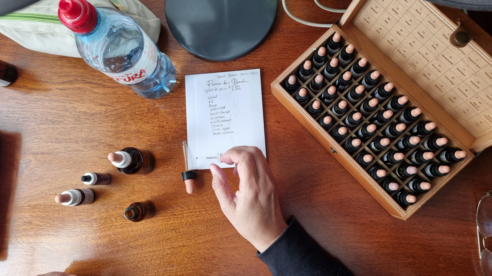

¿Qué son las Terapias Personalizadas?
Un gotero creado para tus necesidades
Las Terapias Personalizadas consisten en una sesión inicial con el paciente en la que se consulta acerca de el o los problemas que se quieran resolver. Esta tiene una duración 30 minutos a 1 hora, es de forma online y a partir de allí, se seleccionan las flores adecuadas para resolver esto. Luego se hace un gotero específico para el paciente y se envía por correo. Nuestros tratamientos suelen tener una duración total de 3 a 6 meses dependiendo la evolución del paciente pero no suele durar más que esto.
